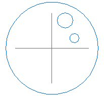
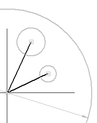
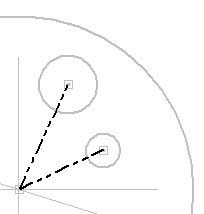
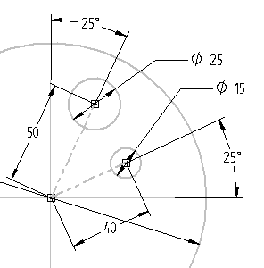
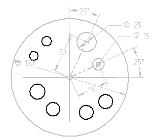
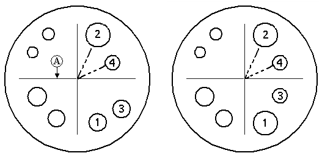
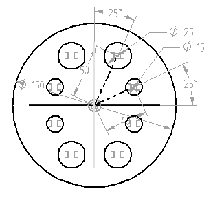
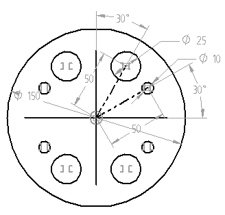

Activity: Applying sketch relationships (symmetric)
In this activity, learn to use symmetric relationships in the profile/sketch environment.
In this activity, use the symmetric relationships in the profile/sketch environment.
-
Open sketch_b1.par.

Select the sketch in the window and then click the Edit Profile command.
Place the lines as shown. Lines connect to the centers of the circles and center of the reference planes.

Change the two lines to construction elements. In the Draw group, choose the Construction command . Select the two lines just placed.

Dimension the circles and lines as shown.

Place six circles in the remaining three quadrants of the main circle.
-
Place the circles as shown. Position and size do not matter. Be sure not to pick up any relationships from other geometry while placing the circles. If you have problems doing this, place a circle outside the main circle and then drag it inside the main circle.

In the Relate group, choose the Symmetric command .
Click the horizontal reference plane (A). Click circle (1) and then click circle (2). Circle (1) is now symmetrical to circle (2). Click circle (3) and then click circle (4). Circle (3) is now symmetrical to circle (4).

Apply symmetric relationships to the remaining circles using the vertical reference plane as the symmetry axis. In order to do this you must select a new symmetry axis. Choose the Symmetry Axis command .
Click the vertical reference plane.
Choose the Symmetric command and then click the remaining circles to apply symmetry as shown.

Edit the dimensions and observe the results.
Edit the 40 dimension on the angled construction line to 50.
Edit both 25° dimensions to 30°.
Edit the 15 diameter to 10.

Choose the Close Sketch command. On the command bar, click Finish.
Close the file and do not save. This completes the activity.
In this activity, you learned how to use dimensions and relationships to position a profile containing interior features. Relationships were used to position various features relative to each other. By varying the dimensions, you are able to control the size and position of the interior features and maintain design intent.
-
Click the Close button in the upper–right corner of this activity window.